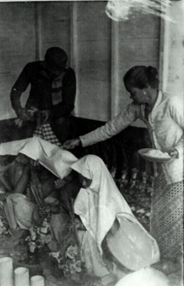

Upacara Entas-Entas
Salah satu ritual adat yang sampai sekarang masih sering diadakan adalah entas-entas, yaitu upacara adat yang sering dilakukan oleh masyarakat Tengger di Desa Ngadas, Poncokusumo, Kabupaten Malang. Penduduk di kawasan yang terletak tidak jauh dari Gunung Bromo tersebut mayoritas beragama Hindu. Istilah entas-entas berasal dari bahasa Jawa “entas†yang artinya mengangkat. Tujuan ritual yang biasanya diadakan untuk memperingati kematian ini adalah, agar arwah dan keluarga yang telah meninggal bisa diangkat sehingga mendapatkan tempat yang lebih baik. Ritual ini juga bisa disebut sebagai ritual penyucian roh leluhur. Saat melakukan ritual, keluarga yang ditinggalkan biasanya akan menyediakan sebuah boneka bernama Petra sebagai tempat kembalinya roh. Boneka tersebut terbuat dari dedaunan dan bunga yang nantinya akan disucikan oleh pemuka adat. Selain boneka, keluarga juga akan menyediakan kulak yaitu wadah bambu berisi beras, kambing putih sebagai kendaraan roh, dan kain panjang yang dibentangkan. Inti dari upacara kematian ini adalah untuk mengembalikan manusia kepada unsur alaminya, yaitu tanah, kayu, air, dan panas. Unsur-unsur tersebut disimbolkan oleh beberapa benda yang disertakan dalam ritual, termasuk boneka Petra. Sekilas, entas-entas mirip dengan upacara Ngaben di Bali. Bedanya, yang dibakar di sini adalah boneka sebagai perwujudan keluarga yang telah meninggal. Upacara entas-entas sendiri biasanya diadakan selama tiga bulan, ketika hari ke-40 atau 1.000 setelah meninggalnya keluarga yang ingin disucikan. Jika ditelaah, selain sarat dengan budaya Hindu, upacara entas-entas memiliki hubungan yang erat dengan kebudayaan masyarakat masa lalu, yaitu memuja nenek moyang (animisme).